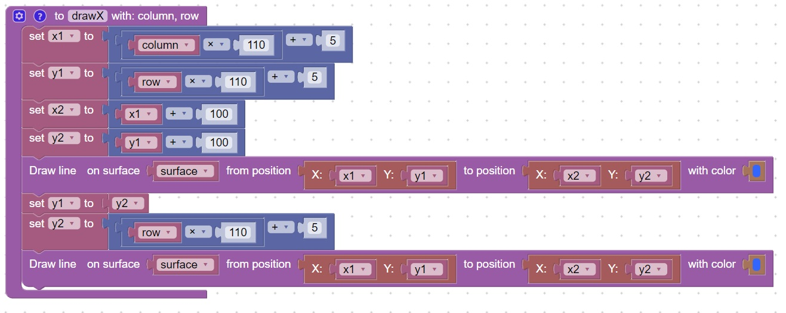

<h1>Create a function to Draw an X</h1>
<h2>New Concepts</h2>
   <table border="2px solid">
     <tr><th>Name</th><th>Description</th></tr>  
     <tr><td>Functions</td><td>Are a group of code that is related to a single purpose</th></tr>
     <tr><td>Parameters</td><td>Inputs that are passed in to the function like (column,row)</td></tr>  
     <tr><td>Call Function</td><td>They can also be called from the main function</td></tr>     
   </table>
<h2>Code</h2>
This code will create a function that draws an X at a specific column,row.<br>
<br>
<hr>
<center></center>